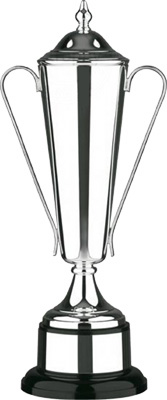

The FOOTY JAPAN CUP Sponsored in 2005 by Wall Street Associates.
- When: Nov - May/June 2005
- Where: The various grounds used by TML.
- Teams: Teams from both within and outside of Tokyo Metropolis League are Welcome. Players will be able to register & play in ONLY ONE team in this tournament.
- Format: Groups, then Knockout. To be decided dependant on number of teams.
- Cost: Team registration will be ¥10,000. Match fees will be ¥15,000 per match. The final match will not be charged.
- Registration Period: Registration will end Nov 14th, for registration form, please
CONTACT US.
- Draw: Will be made by November 14th, so 1st round matches can be played 23rd November
- Special Rules:
Click Here.
Registered Teams
Seeded teams: SWISS, HIBS, YC&AC, SALA.
Unseeded teams: BEFC, BFC, FRANCE, GECKOES, MARITIZIO, AFC WANDERERS, BARBARIANS, JETS, KANTO CELTS, NOVA, SHANE FC, COPEL FC
|